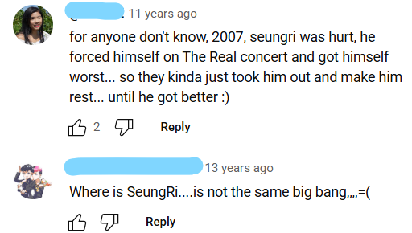

官拍演唱会2007年
下面的视频来自@陆豆纱 点击进入观看完整视频
2007年5月3日
Mnet Super Concert
超级小型演唱会
- La La La + Shake It
下面的视频来自@小猪搞快跑 点击进入观看完整视频
2007年2月15日
MBC Teleconcert第一场
- 小型演唱会
- 无中字
下面的视频来自@小猪搞快跑 点击进入观看完整视频
2007年6月2日
MBC Teleconcert第二场
- 小型演唱会
- 无中字
2007年10月9日
MBC Teleconcert第三场
- 当天拍摄
下面的视频来自@小猪搞快跑 点击进入观看完整视频
2007年11月17日
MBC Teleconcert第三场
- 小型演唱会
- 无中字
- 龙tory细节在专区
2007年9月16日
KBS Cheon Kuk Concert
- 唱Lies
2007年10月15日
Share and Peace Concert
- 唱Lies
2007年10月27日
PBC Concert
- 唱Lies
2007年11月28日
Hongdae Guerrilla Concert
客串的小型演唱会
- Mnet播出的花絮
完整版饭拍视频
From YouTube by @myusiq
- Shake It
- 필승Certain Victory
- Last Farewell
- Lies
- 필승Certain Victory*2
唱Shake It
- From YouTube by @Chip Fangora
唱Certain Victory
- From YouTube by @Chip Fangora
唱Last Farewell
- From YouTube by @Chip Fangora
下面的视频来自@陆豆纱 点击进入观看完整视频
2007年11月4日
SBS Love Concert
唱Lies
下面的视频来自@陆豆纱 点击进入观看完整视频
2007年12月1日 Love Concert
唱Last Farewell
2007年12月1日
Human Rights Day Love Concert
唱Lies
2007年12月1日
Human Rights Day Love Concert
唱Last Farewell
2007年12月28日参与 MBC One Love Concert
- Crazy Dog
- 胜利受伤了，所以缺席

谁懂我在2025年看到这两条评论的感受啊..莉粉心里暖暖的
2007年5月15日至7月15日
Want You Tour
首次在韩国国内进行巡回演唱会
没有官拍演唱会
- 2007年5月15日：韩国仁川
- 2007年6月17日：韩国春川
- 2007年6月30日：韩国大邱
- 2007年7月15日：韩国昌原
- 2007年7月29日：韩国全州
均没有官拍演唱会视频（GD站子饭拍视频）From YouTube by Chip Fangora cr:DCGD
两个视频是全体成员穿女装（梅开二度）除了体面的胜利没有穿
2007年Want You Concert，五场里的其中一场
- 胜利在唱WG (Irony)
但是TOP...太抢镜了
2007年Want You Concert，五场里的其中一场
- 龙tory第一个名场面
1:57没错就是莫名其妙在演唱会上大喊喜欢你的那个
2007年Want You Concert，五场里的其中一场
- GD被成员恶作剧
2007年Want You Concert，五场里的其中一场
- 唱Summer story + Run to you
2007年Want You Concert，五场里的其中一场
- 唱BIGBANG (remix)
2007年Want You Concert，五场里的其中一场
- 唱La La La + Shake It
2007年Want You Concert，五场里的其中一场
- 唱Even If It's Only A Memory
对不起我真的不知道中文名叫什么
2007年Want You Concert，五场里的其中一场
- 唱Gimme That
2007年Want You Concert，五场里的其中一场
- GD唱This Love
下面的视频来自@小猪搞快跑 点击进入观看完整视频
2007年12月28日
The Great Concert第一天
演唱会持续三天（28-30日）在韩国首尔
- 08:45 这一段胜利没有被烟花炸伤（是第二天29号且没有官拍演唱会）
点击这里：具体细节
我觉得不关龙特的事情，是分析胜利被炸伤后发生的一乱串的事 - 14:33 胜利弹琴和大声唱 试着微笑
- 20:35 胜利弹琴唱 第二天
- 36:32 咖啡王子一号店的恶搞版，名字叫：咖啡王子二号店
2008年2月27日发行音源专辑
花絮在自己的专区里，可以去看看